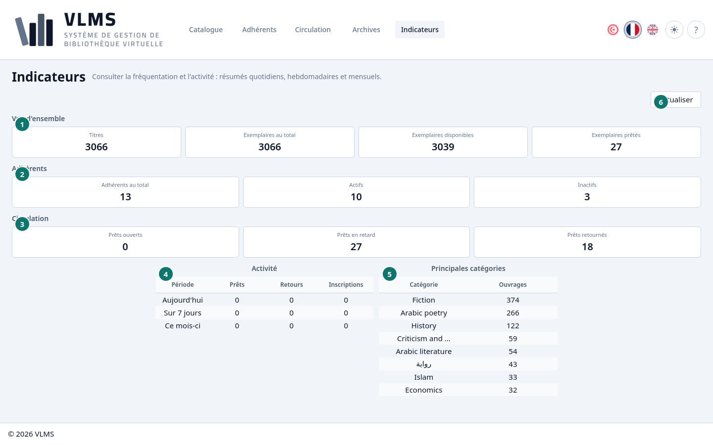

Indicateurs
Les comptes du catalogue, des adhérents et des prêts.
Les Indicateurs sont un tableau de bord, pas une liste. Actualiser relit les chiffres.


- Vue d'ensemble
- Adhérents
- Circulation
- Activité
- Principales catégories
- Actualiser


Vue d'ensemble
- Titres — les titres encore en service.
- Exemplaires au total — les exemplaires encore en service.
- Exemplaires disponibles — sur le rayon.
- Exemplaires prêtés — sortis maintenant, que le prêt soit ouvert ou en retard.
Adhérents
- Adhérents au total — les adhérents encore en service.
- Actifs — dernier jour actif aujourd'hui ou plus tard. Voir Statut d'un adhérent.
- Inactifs — tous les autres qui sont encore en service.
Circulation
- Prêts ouverts — sortis, et dus aujourd'hui ou plus tard. Cela n'inclut pas les prêts en retard.
- Prêts en retard — sortis, et dont le jour dû est passé.
- Prêts retournés — revenus, et pas encore archivés.
Le même partage est dans États d'un prêt.
Activité
Les prêts, les retours et les nouveaux adhérents, pour aujourd'hui, les 7 derniers jours et ce mois.
Principales catégories
Les catégories qui ont le plus de titres encore en service, et combien de titres chacune en a.